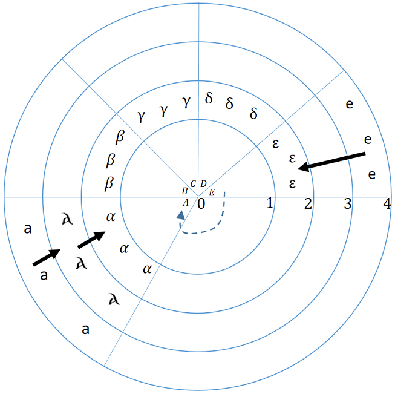
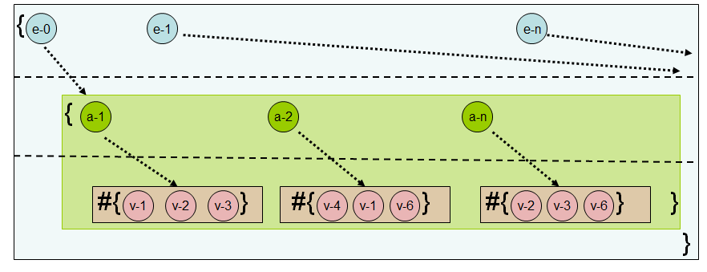
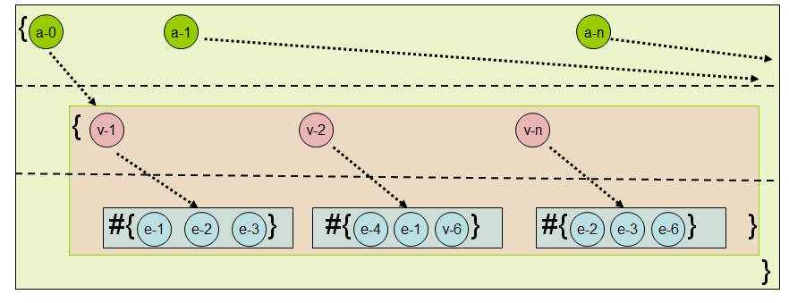

An Archaeology-Inspired Database
by Yoav Rubin
Yoav Rubin is a Senior Software Engineer at Microsoft, and prior to that was a Research Staff Member and a Master Inventor at IBM Research. He works now in the domain of data security in the cloud, and in the past his work focused on developing cloud or web based development environments. Yoav holds an M.Sc. in Medical Research in the field of Neuroscience and B.Sc in Information Systems Engineering. He goes by \@yoavrubin on Twitter, and occasionally blogs at http://yoavrubin.blogspot.com.
Introduction
Software development is often viewed as a rigorous process, where the inputs are requirements and the output is the working product. However, software developers are people, with their own perspectives and biases which color the outcome of their work.
In this chapter, we will explore how a change in a common perspective affects the design and implementation of a well-studied type of software: a database.
Database systems are designed to store and query data. This is something that all information workers do; however, the systems themselves were designed by computer scientists. As a result, modern database systems are highly influenced by computer scientists’ definition of what data is, and what can be done with it.
For example, most modern databases implement updates by overwriting old data in-place instead of appending the new data and keeping the old. This mechanism, nicknamed “place-oriented programming” by Rich Hickey, saves storage space but makes it impossible to retrieve the entire history of a particular record. This design decision reflects the computer scientist’s perspective that “history” is less important than the price of its storage.
If you were to instead ask an archaeologist where the old data can be found, the answer would be “hopefully, it’s just buried underneath”.
(Disclaimer: My understanding of the views of a typical archaeologist is based on visiting a few museums, reading several Wikipedia articles, and watching the entire Indiana Jones series.)
Designing a Database Like an Archaeologist
If we were to ask our friendly archaeologist to design a database, we might expect the requirements to reflect what would be found at an excavation site:
- All data is found and catalogued at the site.
- Digging deeper will expose the state of things in times past.
- Artifacts found at the same layer are from the same period.
- Each artifact will consist of state that it accumulated in different periods.
For example, a wall may have Roman symbols on it on one layer, and in a lower layer there may be Greek symbols. Both these observations are recorded as part of the wall’s state.
This analogy is visualized in Figure: The Excavation Site:
- The entire circle is the excavation site.
- Each ring is a layer (here numbered from 0 to 4).
- Each slice is a labeled artifact (‘A’ through ‘E’).
- Each artifact has a ‘symbol’ attribute (where a blank means that no update was made).
- Solid arrows denote a change in symbol between layers
- Dotted arrows are arbitrary relationships of interest between artifacts (e.g., from ‘E’ to ‘A’).

If we translate the archaeologist’s language into terms a database designer would use:- The excavation site is a database.
- Each artifact is an entity with a corresponding ID.
- Each entity has a set of attributes, which may change over time.
- Each attribute has a specific value at a specific time.
This may look very different from the kinds of databases you are used to working with. This design is sometimes referred to as “functional database”, since it uses ideas from the domain of functional programming. The rest of the chapter describes how to implement such a database.
Since we are building a functional database, we will be using a functional programming language called Clojure.
Clojure has several qualities that make it a good implementation language for a functional database, such as out-of-the-box immutability, higher order functions, and metaprogramming facilities. But ultimately, the reason Clojure was chosen was its emphasis on clean, rigorous design, which few programming languages possess.
Laying the Foundation
Let’s start by declaring the core constructs that make up our database.
(defrecord Database [layers top-id curr-time])
A database consists of:
- Layers of entities, each with its own unique timestamp (the rings in Figure 1).
- A top-id value which is the next available unique ID.
- The time at which the database was last updated.
(defrecord Layer [storage VAET AVET VEAT EAVT])
Each layer consists of:
- A data store for entities.
- Indexes that are used to speed up queries to the database. (These indexes and the meaning of their names will be explained later.)
In our design, a single conceptual ‘database’ may consist of many Database instances, each of which represents a snapshot of the database at curr-time. A Layer may share the exact same entity with another Layer if the entity’s state hasn’t changed between the times that they represent.
Entities
Our database wouldn’t be of any use without entities to store, so we define those next. As discussed before, an entity has an ID and a list of attributes; we create them using the make-entity function.
(defrecord Entity [id attrs])
(defn make-entity
([] (make-entity :db/no-id-yet))
([id] (Entity. id {})))
Note that if no ID is given, the entity’s ID is set to be :db/no-id-yet, which means that something else is responsible for giving it an ID. We’ll see how that works later.
Attributes
Each attribute consists of its name, value, and the timestamps of its most recent update as well as the one before that. Each attribute also has two fields that describe its type and cardinality.
In the case that an attribute is used to represent a relationship to another entity, its type will be :db/ref and its value will be the ID of the related entity. This simple type system also acts as an extension point. Users are free to define their own types and leverage them to provide additional semantics for their data.
An attribute’s cardinality specifies whether the attribute represents a single value or a set of values. We use this field to determine the set of operations that are permitted on this attribute.
Creating an attribute is done using the make-attr function.
(defrecord Attr [name value ts prev-ts])
(defn make-attr
([name value type ; these ones are required
& {:keys [cardinality] :or {cardinality :db/single}} ]
{:pre [(contains? #{:db/single :db/multiple} cardinality)]}
(with-meta (Attr. name value -1 -1) {:type type :cardinality cardinality})))
There are a couple of interesting patterns used in this constructor function:
- We use Clojure’s Design by Contract pattern to validate that the cardinality parameter is a permissible value.
- We use Clojure’s destructuring mechanism to provide a default value of
:db/singleif one is not given. - We use Clojure’s metadata capabilities to distinguish between an attribute’s data (name, value and timestamps) and its metadata (type and cardinality). In Clojure, metadata handling is done using the functions
with-meta(to set) andmeta(to read).
Attributes only have meaning if they are part of an entity. We make this connection with the add-attr function, which adds a given attribute to an entity’s attribute map (called :attrs).
Note that instead of using the attribute’s name directly, we first convert it into a keyword to adhere to Clojure’s idiomatic usage of maps.
(defn add-attr [ent attr]
(let [attr-id (keyword (:name attr))]
(assoc-in ent [:attrs attr-id] attr)))
Storage
So far we have talked a lot about what we are going to store, without thinking about where we are going to store it. In this chapter, we resort to the simplest storage mechanism: storing the data in memory. This is certainly not reliable, but it simplifies development and debugging and allows us to focus on more interesting parts of the program.
We will access the storage via a simple protocol, which will make it possible to define additional storage providers for a database owner to select from.
(defprotocol Storage
(get-entity [storage e-id] )
(write-entity [storage entity])
(drop-entity [storage entity]))
And here’s our in-memory implementation of the protocol, which uses a map as the store:
(defrecord InMemory [] Storage
(get-entity [storage e-id] (e-id storage))
(write-entity [storage entity] (assoc storage (:id entity) entity))
(drop-entity [storage entity] (dissoc storage (:id entity))))
Indexing the Data
Now that we’ve defined the basic elements of our database, we can start thinking about how we’re going to query it. By virtue of how we’ve structured our data, any query is necessarily going to be interested in at least one of an entity’s ID, and the name and value of some of its attributes. This triplet of (entity-id, attribute-name, attribute-value) is important enough to our query process that we give it an explicit name: a datom.
Datoms are important because they represent facts, and our database accumulates facts.
If you’ve used a database system before, you are probably already familiar with the concept of an index, which is a supporting data structure that consumes extra space in order to decrease the average query time. In our database, an index is a three-leveled structure which stores the components of a datom in a specific order. Each index derives its name from the order it stores the datom’s components in.
For example, let’s look at at the index sketched in Figure: EAVT:
- The first level stores entity-IDs
- The second level stores the related attribute-names
- The third level stores the related value
This index is named EAVT, as the top level map holds Entity IDs, the second level holds Attribute names, and the leaves hold Values. The “T” comes from the fact that each layer in the database has its own indexes, hence the index itself is relevant for a specific Time.

Figure: AVET shows an index that would be called AVET since:- The first level map holds attribute-name.
- The second level map holds the values (of the attributes).
- The third level set holds the entity-IDs (of the entities whose attribute is at the first level).

Our indexes are implemented as a map of maps, where the keys of the root map act as the first level, each such key points to a map whose keys act as the index’s second-level and the values are the index’s third level. Each element in the third level is a set, holding the leaves of the index.Each index stores the components of a datom as some permutation of its canonical ‘EAV’ ordering (entity_id, attribute-name, attribute-value). However, when we are working with datoms outside of the index, we expect them to be in canonical format. We thus provide each index with functions from-eav and to-eav to convert to and from these orderings.
In most database systems, indexes are an optional component; for example, in an RDBMS (Relational Database Management System) like PostgreSQL or MySQL, you will choose to add indexes only to certain columns in a table. We provide each index with a usage-pred function that determines for an attribute whether it should be included in this index or not.
(defn make-index [from-eav to-eav usage-pred]
(with-meta {} {:from-eav from-eav :to-eav to-eav :usage-pred usage-pred}))
(defn from-eav [index] (:from-eav (meta index)))
(defn to-eav [index] (:to-eav (meta index)))
(defn usage-pred [index] (:usage-pred (meta index)))
In our database there are four indexes: EAVT (see Figure: EAVT), AVET (see Figure: AVET), VEAT and VAET. We can access these as a vector of values returned from the indexes function.
(defn indexes[] [:VAET :AVET :VEAT :EAVT])
To demonstrate how all of this comes together, the result of indexing the following five entities is visualized in Table: Indexes.
- Julius Caesar (also known as JC) lives in Rome
- Brutus (also known as B) lives in Rome
- Cleopatra (also known as Cleo) lives in Egypt
- Rome’s river is the Tiber
- Egypt’s river is the Nile
EAVT index AVET index - JC ⇒ {lives-in ⇒ {Rome}}
- B ⇒ {lives-in ⇒ {Rome}}
- Cleo ⇒ {lives-in ⇒ {Egypt}}
- Rome ⇒ {river ⇒ {Tiber}}
- Egypt ⇒ {river ⇒ {Nile}}
- lives-in ⇒ {Rome ⇒ {JC, B}} {Egypt ⇒ {Cleo}}
- river ⇒ {Rome ⇒ {Tiber}} {Egypt ⇒ {Nile}}
VEAT index VAET index -
Rome ⇒ {JC ⇒ {lives-in}}
{B ⇒ {lives-in}} - Egypt ⇒ {Cleo ⇒ {lives-in}}
- Tiber ⇒ {Rome ⇒ {river}}
- Nile ⇒ {Egypt ⇒ {river}}
- Rome ⇒ {lives-in ⇒ {JC, B}}
- Egypt ⇒ {lives-in ⇒ {Cleo}}
- Tiber ⇒ {river ⇒ {Rome}}
- Nile ⇒ {river ⇒ {Egypt}}
-
Indexes
Database
We now have all the components we need to construct our database. Initializing our database means:
- creating an initial empty layer with no data
- creating a set of empty indexes
- setting its
top-idandcurr-timeto be 0
(defn ref? [attr] (= :db/ref (:type (meta attr))))
(defn always[& more] true)
(defn make-db []
(atom
(Database. [(Layer.
(fdb.storage.InMemory.) ; storage
(make-index #(vector %3 %2 %1) #(vector %3 %2 %1) #(ref? %));VAET
(make-index #(vector %2 %3 %1) #(vector %3 %1 %2) always);AVET
(make-index #(vector %3 %1 %2) #(vector %2 %3 %1) always);VEAT
(make-index #(vector %1 %2 %3) #(vector %1 %2 %3) always);EAVT
)] 0 0)))
You may be wondering why we use the always function for the AVET, VEAT and EAVT indexes, and the ref? predicate for the VAET index. This is because these indexes are used in different scenarios, which we’ll see later when we explore queries in depth.
Basic Accessors
Before we can build complex querying facilities for our database, we need to provide a lower-level API that different parts of the system can use to retrieve the components we’ve built by their associated identifiers from any point in time. Consumers of the database can also use this API; however, it is more likely that they will be using the more fully-featured components built on top of it.
This lower-level API is composed of the following four accessor functions:
(defn entity-at
([db ent-id] (entity-at db (:curr-time db) ent-id))
([db ts ent-id] (get-entity (get-in db [:layers ts :storage]) ent-id)))
(defn attr-at
([db ent-id attr-name] (attr-at db ent-id attr-name (:curr-time db)))
([db ent-id attr-name ts] (get-in (entity-at db ts ent-id) [:attrs attr-name])))
(defn value-of-at
([db ent-id attr-name] (:value (attr-at db ent-id attr-name)))
([db ent-id attr-name ts] (:value (attr-at db ent-id attr-name ts))))
(defn indx-at
([db kind] (indx-at db kind (:curr-time db)))
([db kind ts] (kind ((:layers db) ts))))
Since we treat our database just like any other value, each of these functions take a database as an argument. Each element is retrieved by its associated identifier, and optionally the timestamp of interest. This timestamp is used to find the corresponding layer that our lookup should be applied to.
Evolution
A first usage of the basic accessors is to provide a “read-into-the-past” API. This is possible as, in our database, an update operation is done by appending a new layer (as opposed to overwriting). Therefore we can use the prev-ts property to look at the attribute at that layer, and continue looking deeper into history to observe how the attribute’s value evolved throughout time.
The function evolution-of does exactly that. It returns a sequence of pairs, each consisting of the timestamp and value of an attribute’s update.
(defn evolution-of [db ent-id attr-name]
(loop [res [] ts (:curr-time db)]
(if (= -1 ts) (reverse res)
(let [attr (attr-at db ent-id attr-name ts)]
(recur (conj res {(:ts attr) (:value attr)}) (:prev-ts attr))))))
Data Behavior and Life Cycle
So far, our discussion has focused on the structure of our data: what the core components are and how they are aggregated together. It’s time to explore the dynamics of our system: how data is changed over time through the add–update–remove data lifecycle.
As we’ve already discussed, data in an archaeologist’s world never actually changes. Once it is created, it exists forever and can only be hidden from the world by data in a newer layer. The term “hidden” is crucial here. Older data does not “disappear”—it is buried, and can be revealed again by exposing an older layer. Conversely, updating data means obscuring the old by adding a new layer on top of it with something else. We can thus “delete” data by adding a layer of “nothing” on top of it.
This means that when we talk about data lifecycle, we are really talking about adding layers to our data over time.
The Bare Necessities
The data lifecycle consists of three basic operations:
- adding an entity with the
add-entityfunction - removing an entity with the
remove-entityfunction - updating an entity with the
update-entityfunction
Remember that, even though these functions provide the illusion of mutability, all that we are really doing in each case is adding another layer to the data. Also, since we are using Clojure’s persistent data structures, from the caller’s perspective we pay the same price for these operations as for an “in-place” change (i.e., negligible performance overhead), while maintaining immutability for all other users of the data structure.
Adding an Entity
Adding an entity requires us to do three things:
- prepare the entity for addition (by giving it an ID and a timestamp)
- place the entity in storage
- update indexes as necessary
These steps are performed in the add-entity function.
(defn add-entity [db ent]
(let [[fixed-ent next-top-id] (fix-new-entity db ent)
layer-with-updated-storage (update-in
(last (:layers db)) [:storage] write-entity fixed-ent)
add-fn (partial add-entity-to-index fixed-ent)
new-layer (reduce add-fn layer-with-updated-storage (indexes))]
(assoc db :layers (conj (:layers db) new-layer) :top-id next-top-id)))
fix-new-entity function and its auxiliary functions next-id, next-ts and update-creation-ts.
These latter two helper functions are responsible for finding the next timestamp of the database (done by next-ts), and updating the creation timestamp of the given entity (done by update-creation-ts). Updating the creation timestamp of an entity means going over the attributes of the entity and updating their :ts fields.
(defn- next-ts [db] (inc (:curr-time db)))
(defn- update-creation-ts [ent ts-val]
(reduce #(assoc-in %1 [:attrs %2 :ts ] ts-val) ent (keys (:attrs ent))))
(defn- next-id [db ent]
(let [top-id (:top-id db)
ent-id (:id ent)
increased-id (inc top-id)]
(if (= ent-id :db/no-id-yet)
[(keyword (str increased-id)) increased-id]
[ent-id top-id])))
(defn- fix-new-entity [db ent]
(let [[ent-id next-top-id] (next-id db ent)
new-ts (next-ts db)]
[(update-creation-ts (assoc ent :id ent-id) new-ts) next-top-id]))
layer-with-updated-storage.
Finally, we must update the indexes. This means, for each of the indexes (done by the combination of reduce and the partial-ed add-entity-to-index at the add-entity function):
- Find the attributes that should be indexed (see the combination of
filterwith the index’susage-predthat operates on the attributes inadd-entity-to-index) - Build an index-path from the the entity’s ID (see the combination of the
partial-edupdate-entry-in-indexwithfrom-eavat theupdate-attr-in-indexfunction) - Add that path to the index (see the
update-entry-in-indexfunction)
(defn- add-entity-to-index [ent layer ind-name]
(let [ent-id (:id ent)
index (ind-name layer)
all-attrs (vals (:attrs ent))
relevant-attrs (filter #((usage-pred index) %) all-attrs)
add-in-index-fn (fn [ind attr]
(update-attr-in-index ind ent-id (:name attr)
(:value attr)
:db/add))]
(assoc layer ind-name (reduce add-in-index-fn index relevant-attrs))))
(defn- update-attr-in-index [index ent-id attr-name target-val operation]
(let [colled-target-val (collify target-val)
update-entry-fn (fn [ind vl]
(update-entry-in-index
ind
((from-eav index) ent-id attr-name vl)
operation))]
(reduce update-entry-fn index colled-target-val)))
(defn- update-entry-in-index [index path operation]
(let [update-path (butlast path)
update-value (last path)
to-be-updated-set (get-in index update-path #{})]
(assoc-in index update-path (conj to-be-updated-set update-value))))
top-id fields. That last step occurs on the last line of add-entity, which also returns the updated database.
We also provide an add-entities convenience function that adds multiple entities to the database in one call by iteratively applying add-entity.
(defn add-entities [db ents-seq] (reduce add-entity db ents-seq))
Removing an Entity
Removing an entity from our database means adding a layer in which it does not exist. To do this, we need to:
- Remove the entity itself
- Update any attributes of other entities that reference it
- Clear the entity from our indexes
This “construct-without” process is executed by the remove-entity function, which looks very similar to add-entity:
(defn remove-entity [db ent-id]
(let [ent (entity-at db ent-id)
layer (remove-back-refs db ent-id (last (:layers db)))
no-ref-layer (update-in layer [:VAET] dissoc ent-id)
no-ent-layer (assoc no-ref-layer :storage
(drop-entity
(:storage no-ref-layer) ent))
new-layer (reduce (partial remove-entity-from-index ent)
no-ent-layer (indexes))]
(assoc db :layers (conj (:layers db) new-layer))))
remove-back-refs function:
(defn- remove-back-refs [db e-id layer]
(let [reffing-datoms (reffing-to e-id layer)
remove-fn (fn[d [e a]] (update-entity db e a e-id :db/remove))
clean-db (reduce remove-fn db reffing-datoms)]
(last (:layers clean-db))))
reffing-datoms-to to find all entities that reference ours in the given layer; it returns a sequence of triplets that contain the ID of the referencing entity, as well as the attribute name and the ID of the removed entity.
(defn- reffing-to [e-id layer]
(let [vaet (:VAET layer)]
(for [[attr-name reffing-set] (e-id vaet)
reffing reffing-set]
[reffing attr-name])))
update-entity to each triplet to update the attributes that reference our removed entity. (We’ll explore how update-entity works in the next section.)
The last step of remove-back-refs is to clear the reference itself from our indexes, and more specifically from the VAET index, since it is the only index that stores reference information.
Updating an Entity
At its essence, an update is the modification of an entity’s attribute’s value. The modification process itself depends on the cardinality of the attribute: an attribute with cardinality :db/multiple holds a set of values, so we must allow items to be added to or removed from this set, or the set to be replaced entirely. An attribute with cardinality :db/single holds a single value, and thus only allows replacement.
Since we also have indexes that provide lookups directly on attributes and their values, these will also have to be updated.
As with add-entity and remove-entity, we won’t actually be modifying our entity in place, but will instead add a new layer which contains the updated entity.
(defn update-entity
([db ent-id attr-name new-val]
(update-entity db ent-id attr-name new-val :db/reset-to))
([db ent-id attr-name new-val operation]
(let [update-ts (next-ts db)
layer (last (:layers db))
attr (attr-at db ent-id attr-name)
updated-attr (update-attr attr new-val update-ts operation)
fully-updated-layer (update-layer layer ent-id
attr updated-attr
new-val operation)]
(update-in db [:layers] conj fully-updated-layer))))
attr-at and then use update-attr to perform the actual update.
(defn- update-attr [attr new-val new-ts operation]
{:pre [(if (single? attr)
(contains? #{:db/reset-to :db/remove} operation)
(contains? #{:db/reset-to :db/add :db/remove} operation))]}
(-> attr
(update-attr-modification-time new-ts)
(update-attr-value new-val operation)))
update-attr-modification-time updates timestamps to reflect the creation of the black arrows in Figure 1:
(defn- update-attr-modification-time
[attr new-ts]
(assoc attr :ts new-ts :prev-ts (:ts attr)))
update-attr-value actually updates the value:
(defn- update-attr-value [attr value operation]
(cond
(single? attr) (assoc attr :value #{value})
; now we're talking about an attribute of multiple values
(= :db/reset-to operation)
(assoc attr :value value)
(= :db/add operation)
(assoc attr :value (CS/union (:value attr) value))
(= :db/remove operation)
(assoc attr :value (CS/difference (:value attr) value))))
Transactions
Each of the operations in our low-level API acts on a single entity. However, nearly all databases have a way for users to do multiple operations as a single transaction. This means:
- The batch of operations is viewed as a single atomic operation, so all of the operations either succeed together or fail together.
- The database is in a valid state before and after the transaction.
- The batch update appears to be isolated; other queries should never see a database state in which only some of the operations have been applied.
We can fulfill these requirements through an interface that consumes a database and a set of operations to be performed, and produces a database whose state reflects the given changes. All of the changes submitted in the batch should be applied through the addition of a single layer. However, we have a problem: All of the functions we wrote in our low-level API add a new layer to the database. If we were to perform a batch with n operations, we would thus see n new layers added, when what we would really like is to have exactly one new layer.
The key here is that the layer we want is the top layer that would be produced by performing those updates in sequence. Therefore, the solution is to execute the user’s operations one after another, each creating a new layer. When the last layer is created, we take only that top layer and place it on the initial database (leaving all the intermediate layers to pine for the fjords). Only after we’ve done all this will we update the database’s timestamp.
All this is done in the transact-on-db function, which receives the initial value of the database and the batch of operations to perform, and returns its updated value.
(defn transact-on-db [initial-db ops]
(loop [[op & rst-ops] ops transacted initial-db]
(if op
(recur rst-ops (apply (first op) transacted (rest op)))
(let [initial-layer (:layers initial-db)
new-layer (last (:layers transacted))]
(assoc initial-db :layers (conj initial-layer new-layer)
:curr-time (next-ts initial-db)
:top-id (:top-id transacted))))))
Atom, a reference type. Here we leverage the main three key features of an Atom, which are:
- It references a value.
- It is possible to update the referencing of the
Atomto another value by executing a transaction (using Clojure’s Software Transaction Memory capabilities). The transaction accepts anAtomand a function. That function operates on the value of theAtomand returns a new value. After the execution of the transaction, theAtomreferences the value that was returned from the function. - Getting to the value that is referenced by the
Atomis done by dereferencing it, which returns the state of thatAtomat that time.
In between Clojure’s Atom and the work done in transact-on-db, there’s still a gap to be bridged; namely, to invoke the transaction with the right inputs.
To have the simplest and clearest APIs, we would like users to just provide the Atom and the list of operations, and have the database transform the user input into a proper transaction.
That transformation occurs in the following transaction call chain:
transact → _transact → swap! → transact-on-db
Users call transact with the Atom (i.e., the connection) and the operations to perform, which relays its input to _transact, adding to it the name of the function that updates the Atom (swap!).
(defmacro transact [db-conn & txs] `(_transact ~db-conn swap! ~@txs))
_transact prepares the call to swap!. It does so by creating a list that begins with swap!, followed by the Atom, then the transact-on-db symbol and the batch of operations.
(defmacro _transact [db op & txs]
(when txs
(loop [[frst-tx# & rst-tx#] txs res# [op db `transact-on-db] accum-txs# []]
(if frst-tx#
(recur rst-tx# res# (conj accum-txs# (vec frst-tx#)))
(list* (conj res# accum-txs#))))))
swap! invokes transact-on-db within a transaction (with the previously prepared arguments), and transact-on-db creates the new state of the database and returns it.
At this point we can see that with few minor tweaks, we can also provide a way to ask “what if” questions. This can be done by replacing swap! with a function that would not make any change to the system. This scenario is implemented with the what-if call chain:
what-if $\to$ _transact $\to$ _what-if $\to$ transact-on-db
The user calls what-if with the database value and the operations to perform. It then relays these inputs to _transact, adding to them a function that mimics swap!’s APIs, without its effect (callled _what-if).
(defmacro what-if [db & ops] `(_transact ~db _what-if ~@ops))
_transact prepares the call to _what-if. It does so by creating a list that begins with _what-if, followed by the database, then the transact-on-db symbol and the batch of operations. _what-if invokes transact-on-db, just like swap! does in the transaction scenario, but does not inflict any change on the system.
(defn- _what-if [db f txs] (f db txs))
Note that we are not using functions, but macros. The reason for using macros here is that arguments to macros do not get evaluated as the call happens; this allows us to offer a cleaner API design where the user provides the operations structured in the same way that any function call is structured in Clojure.
The above process can be seen in the following examples. For Transaction, the user call:
(transact db-conn (add-entity e1) (update-entity e2 atr2 val2 :db/add))
(_transact db-conn swap! (add-entity e1) (update-entity e2 atr2 val2 :db/add))
(swap! db-conn transact-on-db [[add-entity e1][update-entity e2 atr2 val2 :db/add]])
For what-if, the user call:
(what-if my-db (add-entity e3) (remove-entity e4))
(_transact my-db _what-if (add-entity e3) (remove-entity e4))
(_what-if my-db transact-on-db [[add-entity e3] [remove-entity e4]])
(transact-on-db my-db [[add-entity e3] [remove-entity e4]])
Insight Extraction as Libraries
At this point we have the core functionality of the database in place, and it is time to add its raison d’être: insights extraction. The architecture approach we used here is to allow adding these capabilities as libraries, as different usages of the database would need different such mechanisms.
Graph Traversal
A reference connection between entities is created when an entity’s attribute’s type is :db/ref, which means that the value of that attribute is an ID of another entity. When a referring entity is added to the database, the reference is indexed at the VAET index.
The information found in the VAET index can be leveraged to extract all the incoming links to an entity. This is done in the incoming-refs function, which collects all the leaves that are reachable from the entity at that index:
(defn incoming-refs [db ts ent-id & ref-names]
(let [vaet (indx-at db :VAET ts)
all-attr-map (vaet ent-id)
filtered-map (if ref-names
(select-keys ref-names all-attr-map)
all-attr-map)]
(reduce into #{} (vals filtered-map))))
:db/ref, and by that extract all the outgoing references from that entity. This is done by the outgoing-refs function.
(defn outgoing-refs [db ts ent-id & ref-names]
(let [val-filter-fn (if ref-names #(vals (select-keys ref-names %)) vals)]
(if-not ent-id []
(->> (entity-at db ts ent-id)
(:attrs) (val-filter-fn) (filter ref?) (mapcat :value)))))
graph.clj).
Querying the Database
The second library we present provides querying capabilities, which is the main concern of this section. A database is not very useful to its users without a powerful query mechanism. This feature is usually exposed to users through a query language that is used to declaratively specify the set of data of interest.
Our data model is based on accumulation of facts (i.e., datoms) over time. For this model, a natural place to look for the right query language is logic programming. A commonly used query language influenced by logic programming is Datalog which, in addition to being well-suited for our data model, has a very elegant adaptation to Clojure’s syntax. Our query engine will implement a subset of the Datalog language from the Datomic database.
Query Language
Let’s look at an example query in our proposed language. This query asks: “What are the names and birthdays of entities who like pizza, speak English, and who have a birthday this month?”
{ :find [?nm ?bd ]
:where [
[?e :likes "pizza"]
[?e :name ?nm]
[?e :speak "English"]
[?e :bday (bday-mo? ?bd)]]}
Syntax
We use the syntax of Clojure’s data literals directly to provide the basic syntax for our queries. This allows us to avoid having to write a specialized parser, while still providing a form that is familiar and easily readable to programmers familiar with Clojure.
A query is a map with two items:
- An item with
:whereas a key, and with a rule as a value. A rule is a vector of clauses, and a clause is a vector composed of three predicates, each of which operates on a different component of a datom. In the example above,[?e :likes "pizza"]is a clause. This:whereitem defines a rule that acts as a filter on datoms in our database (like a SQLWHEREclause.) - An item with
:findas a key, and with a vector as a value. The vector defines which components of the selected datom should be projected into the results (like a SQLSELECTclause.)
The description above omits a crucial requirement: how to make different clauses sync on a value (i.e., make a join operation between them), and how to structure the found values in the output (specified by the :find part).
We fulfill both of these requirements using variables, which are denoted with a leading ?. The only exception to this definition is the “don’t care” variable _ (underscore).
A clause in a query is composed of three predicates; Table: Predicates defines what can act as a predicate in our query language.
Name Meaning Example Constant Is the value of the item in the datom equal to the constant? :likes Variable Bind the value of the item in the datom to the variable and return true. ?e Don’t-care Always returns true. _ Unary operator Unary operation that takes a variable as its operand.
Bind the datom's item's value to the variable (unless it's an '_').
Replace the variable with the value of the item in the datom.
Return the application of the operation.(bday-mo? _) Binary operator A binary operation that must have a variable as one of its operands.
Bind the datom's item's value to the variable (unless it's an '_').
Replace the variable with the value of the item in the datom.
Return the result of the operation.(> ?age 20) -
Predicates
Limitations of our Query Language
Engineering is all about managing tradeoffs, and designing our query engine is no different. In our case, the main tradeoff we must address is feature-richness versus complexity. Resolving this tradeoff requires us to look at common use-cases of the system, and from there deciding what limitations would be acceptable.
In our database, we decided to build a query engine with the following limitations:
- Users cannot define logical operations between the clauses; they are always ‘ANDed’ together. (This can be worked around by using unary or binary predicates.)
- If there is more than one clause in a query, there must be one variable that is found in all of the clauses of that query. This variable acts as a joining variable. This limitation simplifies the query optimizer.
- A query is only executed on a single database.
While these design decisions result in a query language that is less rich than Datalog, we are still able to support many types of simple but useful queries.
Query Engine Design
While our query language allows the user to specify what they want to access, it hides the details of how this will be accomplished. The query engine is the database component responsible for yielding the data for a given query.
This involves four steps:
- Transformation to internal representation: Transform the query from its textual form into a data structure that is consumed by the query planner.
- Building a query plan: Determine an efficient plan for yielding the results of the given query. In our case, a query plan is a function to be invoked.
- Executing the plan: Execute the plan and send its results to the next phase.
- Unification and reporting: Extract only the results that need to be reported and format them as specified.
Phase 1: Transformation
In this phase, we transform the given query from a representation that is easy for the user to understand into a representation that can be consumed efficiently by the query planner.
The :find part of the query is transformed into a set of the given variable names:
(defmacro symbol-col-to-set [coll] (set (map str coll)))
The :where part of the query retains its nested vector structure. However, each of the terms in each of the clauses is replaced with a predicate according to Table: Predicates.
(defmacro clause-term-expr [clause-term]
(cond
(variable? (str clause-term)) ;variable
#(= % %)
(not (coll? clause-term)) ;constant
`#(= % ~clause-term)
(= 2 (count clause-term)) ;unary operator
`#(~(first clause-term) %)
(variable? (str (second clause-term)));binary operator, 1st operand is variable
`#(~(first clause-term) % ~(last clause-term))
(variable? (str (last clause-term)));binary operator, 2nd operand is variable
`#(~(first clause-term) ~(second clause-term) %)))
For each clause, a vector with the variable names used in that clause is set as its metadata.
(defmacro clause-term-meta [clause-term]
(cond
(coll? clause-term) (first (filter #(variable? % false) (map str clause-term)))
(variable? (str clause-term) false) (str clause-term)
:no-variable-in-clause nil))
We use pred-clause to iterate over the terms in each clause:
(defmacro pred-clause [clause]
(loop [[trm# & rst-trm#] clause exprs# [] metas# []]
(if trm#
(recur rst-trm# (conj exprs# `(clause-term-expr ~ trm#))
(conj metas#`(clause-term-meta ~ trm#)))
(with-meta exprs# {:db/variable metas#}))))
Iterating over the clauses themselves happens in q-clauses-to-pred-clauses:
(defmacro q-clauses-to-pred-clauses [clauses]
(loop [[frst# & rst#] clauses preds-vecs# []]
(if-not frst# preds-vecs#
(recur rst# `(conj ~preds-vecs# (pred-clause ~frst#))))))
?name) instead of asking the user to understand the internals of the engine by providing variable names as strings ( e.g., "?name"), or even worse, quoting the variable name (e.g., '?name).
At the end of this phase, our example yields the following set for the :find part:
#{"?nm" "?bd"}
and the following structure in Table: Clauses for the :where part. (Each cell in the Predicate Clause column holds the metadata found in its neighbor at the Meta Clause column.)
Query Clause Predicate Clause Meta Clause [?e :likes "pizza"] [#(= % %) #(= % :likes) #(= % "pizza")] ["?e" nil nil] [?e :name ?nm] [#(= % %) #(= % :name) #(= % %)] ["?e" nil "?nm"] [?e :speak "English"] [#(= % %) #(= % :speak) #(= % "English")] ["?e" nil nil] [?e :bday (bday-mo? ?bd)] [#(= % %) #(= % :bday) #(bday-mo? %)] ["?e" nil "?bd"] -
Clauses
This structure acts as the query that is executed in a later phase, once the engine decides on the right plan of execution.
Phase 2: Making a Plan
In this phase, we inspect the query in order to construct a good plan to produce the result it describes.
In general, this will involve choosing the appropriate index (Table: Index Selection) and constructing a plan in the form of a function. We choose the index based on the single joining variable (that can operate on only a single kind of element).
Joining variable operates on Index to use Entity IDs AVET Attribute names VEAT Attribute values EAVT -
Index Selection
The reasoning behind this mapping will become clearer in the next section, when we actually execute the plan produced. For now, just note that the key here is to select an index whose leaves hold the elements that the joining variable operates on.
Locating the index of the joining variable is done by index-of-joining-variable:
(defn index-of-joining-variable [query-clauses]
(let [metas-seq (map #(:db/variable (meta %)) query-clauses)
collapsing-fn (fn [accV v] (map #(when (= %1 %2) %1) accV v))
collapsed (reduce collapsing-fn metas-seq)]
(first (keep-indexed #(when (variable? %2 false) %1) collapsed))))
Once the index is chosen, we construct our plan, which is a function that closes over the query and the index name and executes the operations necessary to return the query results.
(defn build-query-plan [query]
(let [term-ind (index-of-joining-variable query)
ind-to-use (case term-ind 0 :AVET 1 :VEAT 2 :EAVT)]
(partial single-index-query-plan query ind-to-use)))
In our example the chosen index is the AVET index, as the joining variable acts on the entity IDs.
Phase 3: Execution of the Plan
We saw in the previous phase that our query plan ends by calling single-index-query-plan. This function will:
- Apply each predicate clause on an index (each predicate on its appropriate index level).
- Perform an AND operation across the results.
- Merge the results into a simpler data structure.
(defn single-index-query-plan [query indx db]
(let [q-res (query-index (indx-at db indx) query)]
(bind-variables-to-query q-res (indx-at db indx))))
Entity ID Attribute Name Attribute Value 1 :name :likes :speak :bday USA Pizza English July 4, 1776 2 :name :likes :speak :bday France Red wine French July 14, 1789 3 :name :likes :speak :bday Canada Snow English July 1, 1867 -
Example entities
Now it is time to go deeper into the rabbit hole and take a look at the query-index function, where our query finally begins to yield some results:
(defn query-index [index pred-clauses]
(let [result-clauses (filter-index index pred-clauses)
relevant-items (items-that-answer-all-conditions (map last result-clauses)
(count pred-clauses))
cleaned-result-clauses (map (partial mask-path-leaf-with-items
relevant-items)
result-clauses)]
(filter #(not-empty (last %)) cleaned-result-clauses)))
The main characteristics of a result are:
- It is built of three items, each from a different level of the index, and each passed its respective predicate.
- The order of items matches the index’s levels structure. (Predicate clauses are always in EAV order.) The re-ordering is done when applying the index’s
from-eavon the predicate clause. - The metadata of the predicate clause is attached to it.
All of this is done in the function filter-index.
(defn filter-index [index predicate-clauses]
(for [pred-clause predicate-clauses
:let [[lvl1-prd lvl2-prd lvl3-prd] (apply (from-eav index) pred-clause)]
[k1 l2map] index ; keys and values of the first level
:when (try (lvl1-prd k1) (catch Exception e false))
[k2 l3-set] l2map ; keys and values of the second level
:when (try (lvl2-prd k2) (catch Exception e false))
:let [res (set (filter lvl3-prd l3-set))] ]
(with-meta [k1 k2 res] (meta pred-clause))))
Result Clause Result Meta [:likes Pizza #{1}] ["?e" nil nil] [:name USA #{1}] ["?e" nil "?nm"] [:speak "English" #{1, 3}] ["?e" nil nil] [:bday "July 4, 1776" #{1}] ["?e" nil "?bd"] [:name France #{2}] ["?e" nil "?nm"] [:bday "July 14, 1789" #{2}] ["?e" nil "?bd"] [:name Canada #{3}] ["?e" nil "?nm"] [:bday "July 1, 1867" {3}] ["?e" nil "?bd"] -
Query results
Once we have produced all of the result clauses, we need to perform an AND operation between them. This is done by finding all of the elements that passed all the predicate clauses:
(defn items-that-answer-all-conditions [items-seq num-of-conditions]
(->> items-seq ; take the items-seq
(map vec) ; make each collection (actually a set) into a vector
(reduce into []) ;reduce all the vectors into one vector
(frequencies) ;count for each item in how many collections (sets) it was in
(filter #(<= num-of-conditions (last %))) ;items that answered all conditions
(map first) ; take from the duos the items themselves
(set))) ; return it as set
In our example, the result of this step is a set that holds the value 1 (which is the entity ID of USA).
We now have to remove the items that didn’t pass all of the conditions:
(defn mask-path-leaf-with-items [relevant-items path]
(update-in path [2] CS/intersection relevant-items))
Finally, we remove all of the result clauses that are “empty” (i.e., their last item is empty). We do this in the last line of the query-index function. Our example leaves us with the items in Table: Filtered query results.
Result Clause Result Meta [:likes Pizza #{1}] ["?e" nil nil] [:name USA #{1}] ["?e" nil "?nm"] [:bday "July 4, 1776" #{1}] ["?e" nil "?bd"] [:speak "English" #{1}] ["?e" nil nil] -
Filtered query results
We are now ready to report the results. The result clause structure is unwieldy for this purpose, so we will convert it into an an index-like structure (map of maps)—with a significant twist.
To understand the twist, we must first introduce the idea of a binding pair, which is a pair that matches a variable name to its value. The variable name is the one used at the predicate clauses, and the value is the value found in the result clauses.
The twist to the index structure is that now we hold a binding pair of the entity-id / attr-name / value in the location where we held an entity-id / attr-name / value in an index:
(defn bind-variables-to-query [q-res index]
(let [seq-res-path (mapcat (partial combine-path-and-meta (from-eav index))
q-res)
res-path (map #(->> %1 (partition 2)(apply (to-eav index))) seq-res-path)]
(reduce #(assoc-in %1 (butlast %2) (last %2)) {} res-path)))
(defn combine-path-and-meta [from-eav-fn path]
(let [expanded-path [(repeat (first path)) (repeat (second path)) (last path)]
meta-of-path (apply from-eav-fn (map repeat (:db/variable (meta path))))
combined-data-and-meta-path (interleave meta-of-path expanded-path)]
(apply (partial map vector) combined-data-and-meta-path)))
At the end of phase 3 of our example execution, we have the following structure at hand:
{[1 "?e"]{
{[:likes nil] ["Pizza" nil]}
{[:name nil] ["USA" "?nm"]}
{[:speaks nil] ["English" nil]}
{[:bday nil] ["July 4, 1776" "?bd"]}
}}
Phase 4: Unify and Report
At this point, we’ve produced a superset of the results that the user initially asked for. In this phase, we’ll extract the values that the user wants. This process is called unification: it is here that we will unify the binding pairs structure with the vector of variable names that the user defined in the :find clause of the query.
(defn unify [binded-res-col needed-vars]
(map (partial locate-vars-in-query-res needed-vars) binded-res-col))
Each unification step is handled by locate-vars-in-query-result, which iterates over a query result (structured as an index entry, but with binding pairs) to detect all the variables and values that the user asked for.
(defn locate-vars-in-query-res [vars-set q-res]
(let [[e-pair av-map] q-res
e-res (resultify-bind-pair vars-set [] e-pair)]
(map (partial resultify-av-pair vars-set e-res) av-map)))
(defn resultify-bind-pair [vars-set accum pair]
(let [[ var-name _] pair]
(if (contains? vars-set var-name) (conj accum pair) accum)))
(defn resultify-av-pair [vars-set accum-res av-pair]
(reduce (partial resultify-bind-pair vars-set) accum-res av-pair))
[("?nm" "USA") ("?bd" "July 4, 1776")]
Running the Show
We’ve finally built all of the components we need for our user-facing query mechanism, the q macro, which receives as arguments a database and a query.
(defmacro q
[db query]
`(let [pred-clauses# (q-clauses-to-pred-clauses ~(:where query))
needed-vars# (symbol-col-to-set ~(:find query))
query-plan# (build-query-plan pred-clauses#)
query-internal-res# (query-plan# ~db)]
(unify query-internal-res# needed-vars#)))
Summary
Our journey started with a conception of a different kind of database, and ended with one that:
- Supports ACI transactions (durability was lost when we decided to have the data stored in-memory).
- Supports “what if” interactions.
- Answers time-related questions.
- Handles simple datalog queries that are optimized with indexes.
- Provides APIs for graph queries.
- Introduces and implements the notion of evolutionary queries.
There are still many things that we could improve: We could add caching to several components to improve performance; support richer queries; and add real storage support to provide data durability, to name a few.
However, our final product can do a great many things, and was implemented in 488 lines of Clojure source code, 73 of which are blank lines and 55 of which are docstrings.
Finally, there’s one thing that is still missing: a name. The only sensible option for an in-memory, index-optimized, query-supporting, library developer-friendly, time-aware functional database implemented in 360 lines of Clojure code is CircleDB.